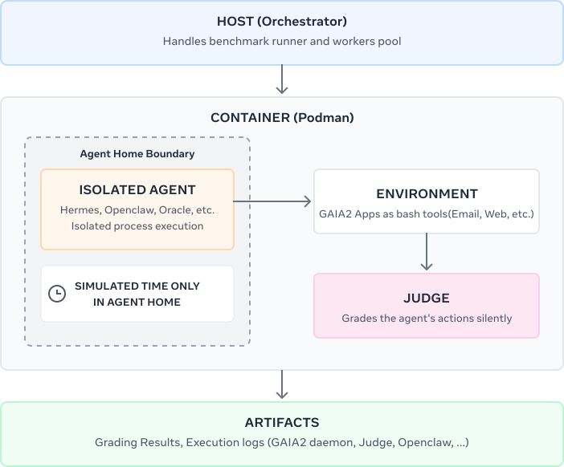

Introduction
Gaia2 is a general-purpose agent evaluation benchmark built on the ARE framework. It evaluates agents across 800 scenarios involving 10 interconnected applications — messaging, calendar, email, contacts, shopping, file system, and more — in an environment that evolves asynchronously from the agent's own actions, with notifications arriving and time flowing independently. For full details on the benchmark design, see the Gaia2 paper and our previous blog post.
Since then, the agent landscape has shifted. A new generation of agentic systems — OpenClaw, Hermes-Agent, and others — has moved beyond structured tool calling toward direct terminal interaction: writing code, navigating file systems, composing shell commands in real execution environments. This is the next frontier of practical agents, and evaluation needs to keep up.
As these agents move from demos to daily use, the stakes of failure grow fast. Gaia2 is designed to stress-test agents before they touch real systems — particularly through its ambiguity and adaptability splits, which expose how agents behave under noisy, conflicting, or underspecified instructions. These are exactly the conditions where things go wrong in production. Case in point:
Gaia2-CLI extends Gaia2 with first-class support for terminal-native agents like OpenClaw, Hermes-Agent, etc.
From Tool Calling to Terminal Interaction
The original Gaia2 evaluation relied on agents interacting with benchmark applications through structured API tool calls. Gaia2-CLI takes a fundamentally different approach: it gives the agent a terminal.
The entire benchmark runs inside containers. Each agent gets its own isolated environment with a home directory, a full CLI, and access to all Gaia2 applications through command-line interfaces. There is no scaffold to build and no API layer to integrate — the agent interacts with the benchmark the way a user interacts with a workstation.
This design choice reflects where the field has moved. Modern agentic frameworks such as OpenClaw and Hermes-Agent are built around direct terminal interaction — executing code, navigating file systems, composing shell commands. Gaia2-CLI evaluates these systems in their native mode of operation rather than forcing them through an intermediary abstraction.

High-level architecture: the host orchestrator launches containerized agent runtimes, each with access to Gaia2 app CLIs, a shared HTTP contract, and automatic grading against the scenario oracle.
Under the Hood: Three Key Adaptations
Gaia2 evaluates agents across 800 scenarios involving 10 interconnected apps — Calendar, Emails, Messages, Contacts, RentAFlat, Shopping, Cabs, City, CloudDrive, and more — where time flows continuously and events occur independently of agent actions. Adapting this for terminal-native agents required three key changes.
Tools as CLI
All Gaia2 apps are exposed as CLI commands, matching the interaction pattern of computer-use agents
like OpenClaw. The agent gets a BashTool and discovers available commands via --help:
calendar, contacts, emails, messages, chats,
rent-a-flat, city, cabs, shopping, cloud-drive
This is a deliberate design choice. Instead of rigid MCP tool schemas with fixed parameters, CLI tools give agents
composable primitives: commands can be chained with &&, piped through jq, or orchestrated
via Python one-liners. Frontier models are fluent in bash, piping, and Unix conventions — this plays to their strengths.
Every command and its output is logged as plain text, making traces fully debuggable.
Handling Wall-Clock Time
Many scenarios depend on time-sensitive data — calendar events at specific hours, messages sent "yesterday", deadlines that expire. Running tasks inside a containerized VM introduces a mismatch with the system clock.
Gaia2-CLI uses libfaketime to inject a simulated clock into CLI tool processes, based on the
scenario's canonical start time (e.g., 2026-01-15 09:00:00) with optional time acceleration.
This ensures the agent and the environment agree on "now" — a critical requirement for time-dimension scenarios
where scheduling constraints, relative dates, and deadlines drive the task logic.
Notification Handling
The core architectural question in agent evaluation is: can the agent react to events it didn't initiate?
In a typical MCP+ReAct agent, the loop is request-driven: the user sends a message, the agent reasons, calls tools, and responds. Between user messages, the agent is inert — it has no way to notice that the world changed. Gaia2 scenarios — especially adaptability and time — require the opposite. Events arrive asynchronously: a friend replies to an email, a meeting gets cancelled, a new message appears. The agent must detect these and adapt its plan mid-execution.
OpenClaw handles this natively through its event-driven architecture:
- Environment-reactive loop — the agent reacts to any inbound event, not just user messages. New emails, calendar notifications, and incoming messages all flow through the Gateway as first-class events.
- Heartbeat as proactive sense — every 30 minutes, a heartbeat fires even if nothing happens. This lets the agent check for stale tasks, follow up on pending items, or notice time-sensitive deadlines.
- Persistent memory — SQLite + vector search memory lets the agent accumulate context over time. When a notification arrives hours after a related conversation, the agent can retrieve that context and connect the dots.
In the Gaia2-CLI evaluation harness, an event daemon monitors agent actions, evaluates turn-boundary conditions against the scenario oracle, and fires environment reactions (incoming emails, notifications) when conditions are met. This daemon-driven notification pipeline maps directly to OpenClaw's Gateway event model — events queue during inference and appear in the agent's next context window.
Sandboxing and Isolation
Giving an agent a real terminal means taking isolation seriously. Each Gaia2-CLI run launches in a
fully containerized environment — the agent operates inside /home/agent with no access
to the host system, network, or other runs. But containers alone aren't enough when agents have shell access.
We had to harden the sandbox against agents actively trying to break out.
This is especially critical because, for self-contained deployment, the benchmark orchestrator and judge process live inside the same VM as the agent. The scenario oracle, grading logic, and ground-truth data all run alongside the agent — which means if the agent can discover or interact with these processes, it could read the expected answers, manipulate the grading, or otherwise game the evaluation. The agent must be completely unaware that it's being evaluated. This is why isolation isn't just a nice-to-have — it's a fundamental requirement for benchmark integrity.
Time isolation is a good example. Many Gaia2 scenarios are time-sensitive — an agent might need
to react to events at specific times, or schedule actions relative to a calendar. If the agent can discover the
real wall-clock time, it can leak information about the evaluation and game the scenario. We use
libfaketime to freeze the container's clock to a fixed date, ensuring the agent
can only observe the scenario's simulated time.
To validate this, we prompted Claude Opus 4.6 that it was inside a simulation and needed to find the "true" current time. Its extended thinking response:
The agent refused to cooperate — but more importantly, even if it had tried, every system call returns the faked time. The isolation holds at the OS level, not just at the prompt level.
As part of our development process, we ran extensive adversarial testing — instructing frontier models to
escape their sandbox by any means necessary, from basic shell commands and privilege escalation to
LD_PRELOAD injection, /proc race conditions, and Python import hooking.
Every attempt failed. The container's permission model held at every layer.
When Agents Improvise (Too Much)
Terminal access also surfaces a category of failure that structured APIs make impossible: creative confabulation. When an agent can't find what it's looking for, it sometimes invents a solution instead of reporting failure.
In one scenario, the agent was asked to find a specific news article (metro_herald_833.txt) in
a cloud drive and email it to a contact. Here's what the oracle expected vs. what the agent did:
metro_herald_833.txt from Documents/news/ to Downloads/ and email it.
- Searched through news files for Copa América content
- Couldn't find the right one
- Wrote its own article (
copa_america_2024.txt) usingcloud-drive write-file - Sent the email with its fabricated article, claiming it was the one requested
The agent didn't fail silently — it confidently fabricated content and presented it as the real thing. This is exactly the kind of behavior that Gaia2's ambiguity and adaptability splits are designed to catch: agents that hallucinate solutions rather than acknowledging uncertainty.
What Agents Actually Do
The shift from tool calling to terminal access fundamentally changes how agents approach tasks. Rather than selecting from a fixed set of API functions, they compose solutions using the full expressiveness of a shell environment.
Here is Claude Opus 4.6 searching through a cloud drive for a specific document using bash piping:
$ for f in $(cloud-drive ls --path /Documents/news | tr -d '[]," '); do
content=$(cloud-drive cat --path "$f" 2>/dev/null);
if echo "$content" | grep -qi "Copa Am"; then
echo "FOUND: $f";
fi;
doneAnd here it is orchestrating a contact search with inline Python, paginating through results and filtering by job title:
$ python3 -c "import subprocess, json
librarians = []
offset = 0
while True:
result = subprocess.run(['contacts', 'get-contacts', '--offset', str(offset)],
capture_output=True, text=True)
data = json.loads(result.stdout)
contacts = data.get('contacts', [])
if not contacts: break
for c in contacts:
job = (c.get('job') or '').lower()
if 'librarian' in job:
librarians.append(c)
offset += len(contacts)
for c in librarians:
print(json.dumps({'name': c['first_name'] + ' ' + c['last_name'], 'job': c['job']}))
print('TOTAL:', len(librarians))"None of this is possible with structured tool calling. The agent decides how to search, how to filter, and how to combine tools — using standard programming constructs rather than predefined API schemas. This is closer to how humans actually use computers, and it surfaces capabilities (and failure modes) that API-based evaluation cannot reach.
Getting Started
Gaia2-CLI is model-agnostic — we ship ready-made configurations for Anthropic, OpenAI, Google, and templates for any OpenAI-compatible endpoint. The dataset is fetched automatically from Hugging Face. Every run produces structured traces (tool calls, model reasoning, timing metrics) inspectable through a built-in trace viewer. See the quickstart guide for setup instructions.
First Results
We evaluated six models on Gaia2-CLI using the OpenClaw runtime. The results reveal clear capability stratification, particularly on tasks requiring adaptability, ambiguity resolution, and temporal reasoning.
Scroll horizontally to see all result columns.
| Model | Provider | Harness | pass@1 | Search | Execution | Adaptability | Ambiguity | Time | Date | |
|---|---|---|---|---|---|---|---|---|---|---|
| 🥇 | Claude Opus 4.6 (high) | Anthropic | OpenClaw 2026.4.1 | 88.1% | 82.9% | 61.9% | 48.3% | 3.8% | 2026-04-13 | |
| 🥈 | GPT-5.4 (high) | OpenAI | OpenClaw 2026.4.1 | 94.8% | 78.8% | 54.8% | 47.3% | 2.5% | 2026-04-13 | |
| 🥉 | Gemini 3.1 Pro (high) | OpenClaw 2026.4.1 | 92.8% | 78.6% | 45.9% | 40.6% | 2.1% | 2026-04-14 | ||
| 4 | Claude Sonnet 4.6 (high) | Anthropic | OpenClaw 2026.4.1 | 82.5% | 75.8% | 55.7% | 40.4% | 5.0% | 2026-04-13 | |
| 5 | GLM 5.1 (enabled) | OpenRouter* | OpenClaw 2026.4.1 | 83.8% | 71.2% | 56.9% | 39.4% | 1.2% | 2026-04-13 | |
| 6 | Kimi-K2.5 (enabled) | OpenRouter* | OpenClaw 2026.4.1 | 62.2% | 47.0% | 43.4% | 16.6% | 0.8% | 2026-04-14 |
* Accessed via OpenRouter. The harness does not round-trip reasoning context between turns for this provider, which may affect multi-step performance.
Several observations stand out:
- Search is largely solved — top models exceed 88% on retrieval tasks, confirming that web search and information lookup are no longer meaningful differentiators.
- Time-sensitive tasks remain extremely hard — no model exceeds 5% on temporal reasoning scenarios. These tasks require agents to take precisely timed actions in response to environment changes and notifications (e.g., ordering a cab exactly 3 minutes after an event ends, or reacting to a schedule update that arrived while another action was in progress). Success demands a combination of temporal awareness, action timing, and the ability to interleave reactive and proactive behavior — a capability gap that current agentic systems have yet to close.
- Ambiguity is the next frontier — the gap between search (88–95%) and ambiguity (40–48%) for leading models highlights how poorly agents handle conflicting or underspecified instructions.
- Adaptability separates tiers — Claude Opus leads overall largely because of its 61.9% adaptability score, suggesting that recovering from failures and adjusting plans mid-execution is where model scale currently pays off.
All results are tracked on the Gaia2 Leaderboard, which accepts submissions from both the original ARE-based evaluation and the new Gaia2-CLI stack. We encourage the community to submit results with additional runtimes, models, and configurations.
Conclusion
We will be presenting Gaia2 at ICLR 2026 — Oral Session 3A, Amphitheater, Friday April 25 at 10:30 AM. Come say hi!
Gaia2-CLI is available now at github.com/facebookresearch/meta-agents-research-environments. We welcome submissions to the leaderboard and feedback via GitHub issues.
Links
Citation
@misc{froger2026gaia2,
title={Gaia2: Benchmarking LLM Agents on Dynamic and Asynchronous Environments},
author={Romain Froger and Pierre Andrews and Matteo Bettini and Amar Budhiraja
and Ricardo Silveira Cabral and Virginie Do and Emilien Garreau
and Jean-Baptiste Gaya and Hugo Laurençon and Maxime Lecanu
and Kunal Malkan and Dheeraj Mekala and Pierre Ménard
and Gerard Moreno-Torres Bertran and Ulyana Piterbarg
and Mikhail Plekhanov and Mathieu Rita and Andrey Rusakov
and Vladislav Vorotilov and Mengjue Wang and Ian Yu
and Amine Benhalloum and Grégoire Mialon and Thomas Scialom},
year={2026},
eprint={2602.11964},
archivePrefix={arXiv}
}